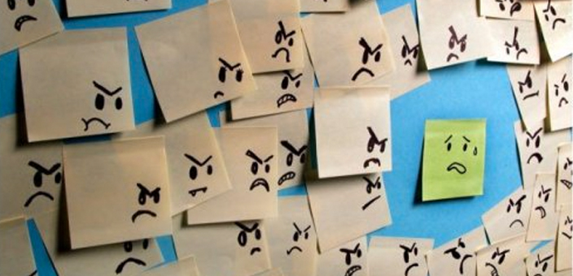

DBIT-Counselling
Don Bosco Institute Of Technology
COUNSELLING DEPARTMENT
Home
About Us
Take a test !
Food for thought !
Contact Us
Admin
Pressure related issues:

Peer Pressure
Decision Making
Cyberbullying